Warrior를 기반으로 하는 Barbarian은 새로운 공격 탤런트, 낚시 탤런트, 그리고 처치한 적의 수에 따라 강해지는 독특한 Apocalypse Zow를 보유합니다. 이 가이드는 전투(데미지·Zow) 빌드와 낚시(스킬링) 빌드를 포함하며, 이 페이지는 Warrior 빌드 가이드와 함께 활용하십시오.
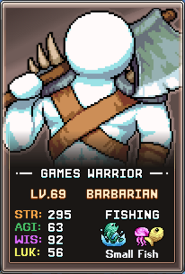
데미지 & Zow 파밍 빌드
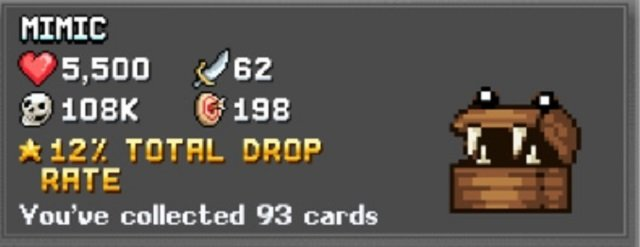
Apocalypse Zow 탤런트는 강력한 % 데미지 부스트를 얻기 위해 몬스터 10만 처치가 필요합니다. 단, World 3에서 멀티킬 메커니즘이 해금되면 훨씬 빠르게 달성할 수 있으므로, 그때까지 이 탤런트에 집중하는 것을 권장합니다. Barbarian의 Zow 진행도는 각 몬스터 카드를 클릭하여 확인할 수 있습니다.
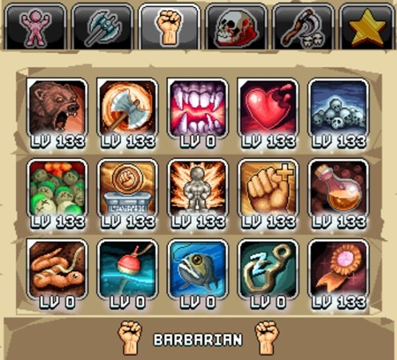
Barbarian 데미지 및 Zow 파밍 빌드의 탤런트 우선순위는 다음과 같습니다.
| 탤런트 | 효과 | 설명 |
|---|---|---|
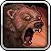 Bear Swipe |
캐릭터 앞쪽을 곰 발톱으로 할퀴어 데미지를 입힘 | 공격 바에 배정하면 Active(직접 플레이) 및 AFK(방치) 수익을 높입니다. 감소 효과가 나타나는 기준점인 50포인트까지 투자한 후 다른 탤런트로 넘어가십시오. |
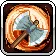 Axe Hurl |
여러 적에게 데미지를 주는 도끼를 던짐 | 위와 마찬가지로 50포인트를 기준으로 먼저 투자한 후 아래 탤런트로 넘어가십시오. |
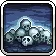 Monster Decimator |
몬스터 처치가 2배로 집계될 % 확률 | Zow 파밍에 필요한 시간을 줄이는 핵심 탤런트이므로 만레벨로 올리십시오. 포탈 처치 수 증가와 W3 데스 노트에도 기여하여 Barbarian을 강력한 초기 맵 개척 캐릭터로 만들어 줍니다. |
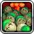 Apocalypse Zow |
몬스터 종류별 10만 처치마다 % 데미지 증가. 레벨이 높을수록 집계되는 몬스터 종류 수 증가 | 몬스터 섬멸을 데미지로 전환하는 Barbarian의 상징적인 탤런트입니다. 데미지 증가량은 33레벨마다 높아집니다(예: 레벨 33 = 3%, 레벨 66 = 4%). 더 높은 탤런트 레벨에 접근하기 전까지는 레벨 99에서 멈추는 것이 좋습니다. |
| No Pain No Gain | 최대 체력을 % 감소시키고 데미지를 % 증가시키며, 받는 데미지를 2배로 만듦 | 최대 체력 감소와 받는 데미지 2배를 감수하면서 얻는 큰 데미지 부스트입니다. 생존 가능 여부를 신중히 확인하십시오(AFK Info 화면에서 수치 확인). 생존이 가능하다면 Barbarian의 다음 최고 데미지 원천입니다. |
 STR Summore STR Summore |
Fist of Rage의 최대 탤런트 레벨 증가 | Warrior 탭의 여유 탤런트 포인트가 필요하며, Barbarian 데미지를 위한 근력(STR)을 제공합니다. 아래의 Back to Basics와 함께 레벨을 올리십시오. |
 Back To Basics Back To Basics |
Warrior 탤런트 탭 포인트 증가 | 다른 Warrior 탤런트나 위의 STR Summore에 투자할 추가 탤런트 포인트를 제공합니다. |
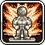 Strongest Statues |
Power, Mining, Oceanman 조각상 보너스 % 증가 | 기본 데미지를 주는 Power 조각상을 강화하여 소폭의 부스트를 제공합니다. 이 탤런트를 올리기 전에 Bear Swipe와 Axe Hurl을 먼저 만레벨로 올리십시오. |
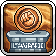 Fistful Of Obol |
Obols의 STR % 증가 | Obols의 기본 근력 수치는 낮지만, 위의 모든 것을 이미 올린 후에는 추가 데미지 원천이 됩니다. |
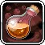 Beefy Bottles |
Warriors Rule 버블 레벨마다 CritiKill의 최대 레벨 증가 | 추가 치명타 데미지로 이어지는 소폭의 데미지 탤런트이지만, 사전에 연금술 진행도(Warriors Rule 버블)가 필요합니다. |
낚시(Fishing) 빌드
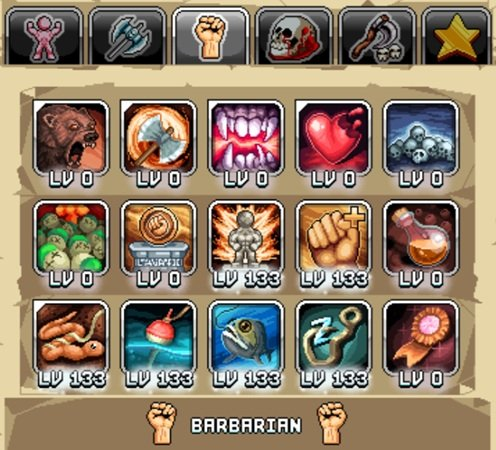
Barbarian의 최적 스킬링 빌드는 진행에 매우 중요합니다. 물고기는 모루 제작 레시피, 연금술, 우표, 그리고 초반에 구하기 어려운 다양한 자원에 사용됩니다. 이 낚시 빌드는 Warrior 채굴 빌드와 같은 탤런트 프리셋에 넣을 수 있습니다. Brute Efficiency, Idle Skilling 등 채굴과 낚시 모두에 혜택을 주는 탤런트가 있기 때문입니다. 낚시 우선순위는 다음과 같습니다.
| 탤런트 | 효과 | 설명 |
|---|---|---|
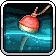 Bobbin' Bobbers |
미니게임 보상 증가 및 최고 점수 1점당 낚시 파워 1 증가 (레벨에 따라 최고 점수 상한 증가) | 단 9포인트로 첫 번째 Copper Rod에 맞먹는 낚시 파워를 제공하는 강력한 탤런트입니다. 현재 낚시 미니게임 최고 점수 기준으로만 레벨을 올리십시오. 예를 들어 탤런트 레벨 100은 최고 점수가 38 이상인 경우 낚시 파워 38을 제공합니다. 이 탤런트의 강력함 덕분에 미니게임 연습이 낚시 파워 부스트로 이어질 수 있습니다. |
 Catching Some Zzz's Catching Some Zzz's |
낚시 AFK 수익 % 증가 | 낚시 파워 기반을 마련한 후 Barbarian 낚시 시간의 수익을 극대화하십시오. |
 Worming Undercover Worming Undercover |
즉시 물고기를 잡을 % 확률 | Warrior의 Big Pick 스킬과 유사하게 공격 바에 배정해야 하며, 전반적인 낚시 수익을 향상시킵니다. |
| Strongest Statues | Power, Mining, Oceanman 조각상 보너스 % 증가 | World 2 버그 둥지에서 얻을 수 있는 낚시 파워를 제공하는 Oceanman 조각상을 강화합니다. |
 All Fish Diet All Fish Diet |
낚시 경험치 % 증가 | 높은 낚시 경험치는 더 강한 낚싯대를 해금하지만, 전체적으로 가장 낮은 우선순위입니다. 이 이후에도 여유 포인트가 있다면 근력 탤런트(STR Summore, Fistful of Obols) 또는 Back to Basics에 투자하십시오. |